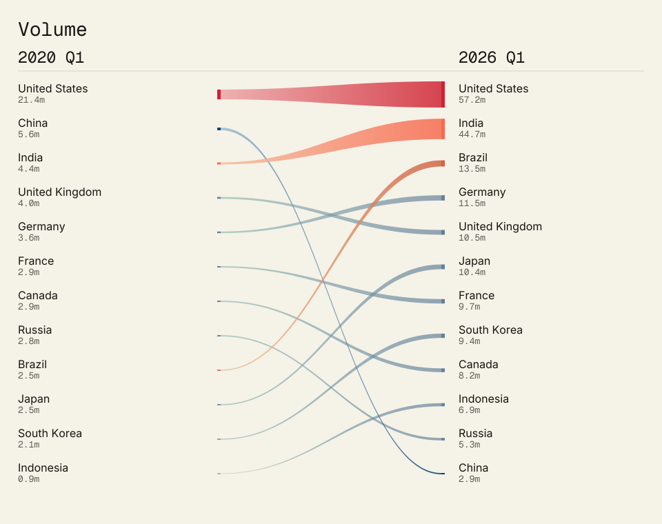
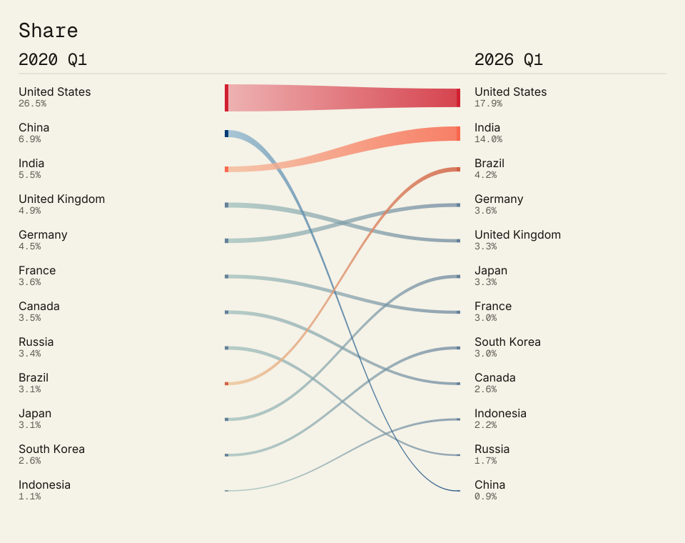

Both charts now appear together as Figure 2 in the article. They show the 12 countries appearing in the top ten at either endpoint.

The bands show how each country's volume of public pushes changed from early 2020 to early 2026. Their widths represent quarterly pushes on the same scale; the labels give counts and shares. The chart includes countries in either quarter's top ten. The bands do not represent pushes moving between countries.

The bands widen as a country gains share of public pushes and narrow as it loses share. Width represents its portion of the 149-economy total in each quarter, using one scale at both ends. The chart includes countries in either quarter's top ten; vertical gaps do not measure the size of rank changes.